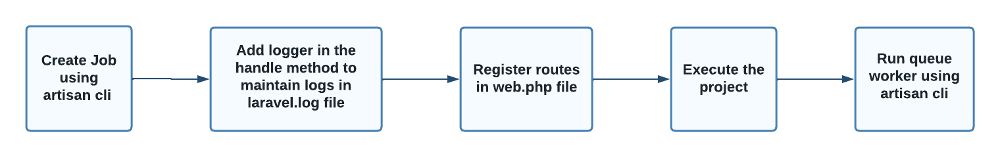

Job Classes and Daemons
WORKFLOW
CREATE JOB
Create a job using php artisan
php artisan make:job AccountCreation
ADD LOGGER
In app/Jobs/AccountCreation.php add the logger in the handle method
logger('Any Log Message');
ADD ROUTES
In the routes/web.php instead of the closure function instantiate the job class ( i.e AccountCreation ) as our job
use App\Jobs\AccountCreation;
Route::get('/', function () {
dispatch(new AccountCreation) ;
return 'Trying to dispatch a job';
});
EXECUTE
Run the code and the job handler in two different terminals
php artisan serve
php artisan queue:work
Check storage/logs/laravel.log